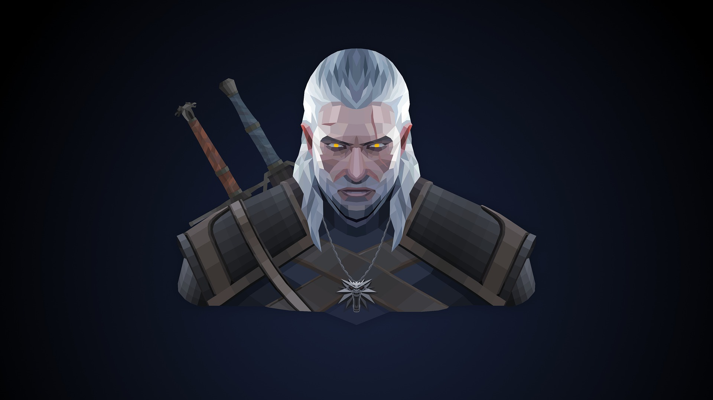
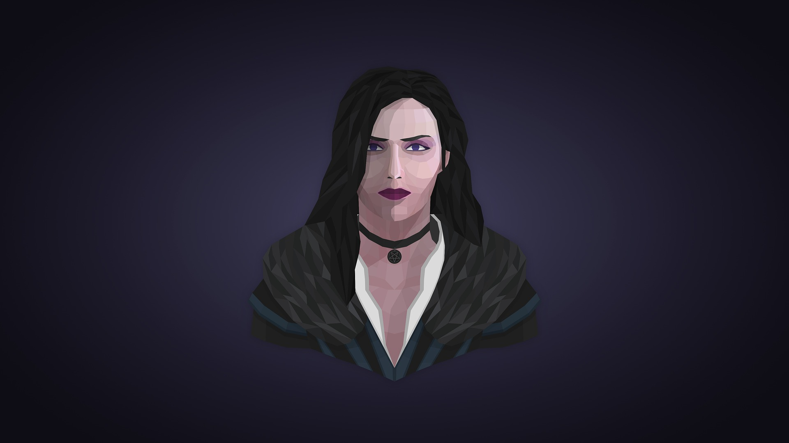
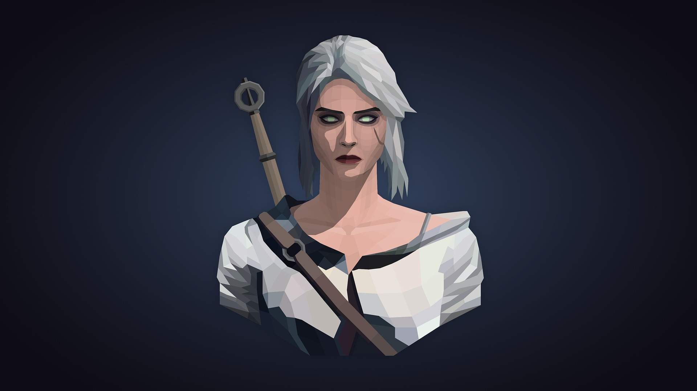

Meet the Characters
This is Geralt of Rivia, the Witcher, and unwilling hero of the story. Witchers are created using magic potions and mutagens, to make them more suited to killing monsters than normal humans are. Despite the important trade Witchers work, they are looked down upon as mutants and freaks.
This is Yennefer of Vengerberg. She is a powerful sorceress, former advisor to a king, and one of the 13 of The Hill from the battle of Sodden. Thanks to a hastily and poorly worded wish, Yen and Geralt are bound together by destiny.
This is Cirilla Fiona Elen Riannon, Princess of Cintra. Ciri is on the run from the Emperor of Nilfgard who, for reasons unknown, wants her captured at all costs. She is the adoptive daughter of Geralt and Yennefer, brought to Geralt through the Law of Surprise, or perhaps, by destiny.

This is Roach. Roach is every single horse that Geralt has ever had. He refuses to name a horse anything else, regardless if the horse is a stallion or mare (though the current Roach, if you count the games, is a mare).